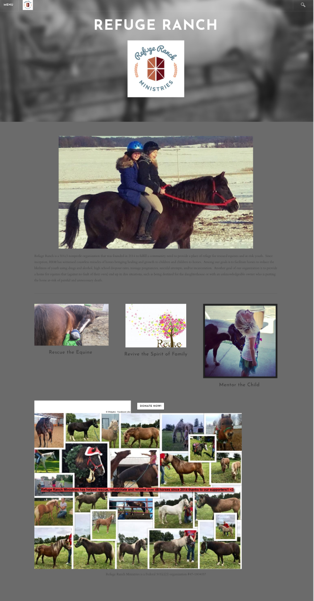
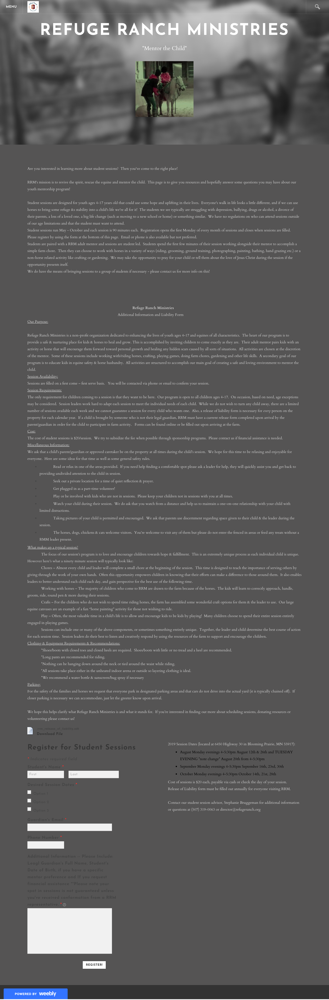

83.3% Discuss mental health with their children

58.3% Would consider alternatives to western medicine
In a team of 4 designers, we chose a local non-profit website to redesign. We executed a high-fidelity responsive web redesign solution through a clickable prototype and utilized our skills gained in both UX and UI design. The non-profit we chose was Refuge Ranch Ministries which is an organization that rescues horses and provies equine therapy for at-risk youth.
3 weeks
As a team our roles were user research and usability testing, ideation and brainstorming, prototyping, the final presentation. We worked together on the design and I specifically worked on the mobile version of our site.
User research, user interviews, defining the problem, ideation and brainstorming,information architecure, UI prototyping, UI style guise design, UI testing and final group presentation.
Figma, Miro, Canva, Google Drive, Pen and Paper and Zoom.
Our team decided on Refuge Ranch Ministries website to redesign because we admired the organizations overall mission and our shared appeciation of horses. However, we found that the website was outdated, lacked accessibility and its design and information architecure needed improvement.
 Parents and guardians need alternative therapy methods in a safe environment to improve their children's mental health because of the current mental health crisis among youth.
Parents and guardians need complete and trustworthy information, so they feel safe with their children/child participating in Refuge Ranch Ministries programs and services.
We each interviewed 1 person, 4 in total to gain insight on people’s views on the Refuge Ranch Ministries website and how they feel about alternative forms of therapy particularly equine therapy. These are some of the things we heard during our interviews:
We also conducted a survey to gain insight on parents views on equine therapy, mental health among youth and alternative forms of therapy. These are some of the results we found important from our survey.
83.3% Discuss mental health with their children
58.3% Would consider alternatives to western medicine
With the information gathered from our interviews and survey, my teammates and I organized our results into an affinity diagram.


Our user persona is Ella Young. Ella is a busy mom to a neurodivergent child. Ella wants to make sure her daughter Olivia has productive, stimulating and safe activities to do. Ella is motivated by seeing progress in her daughter’s mental and physical well being. Ella is interested and open to alternative forms of traditional therapy and western medicine. Ella is willing to try the best option for her daughter’s happiness.

Current User Flow

Redesigned User Flow
For our user flow, we wanted the navigation to be easy to understand. A user might not know that “Mentor the Child” is where you would sign up your child. We did not want any confusion in our redesign.